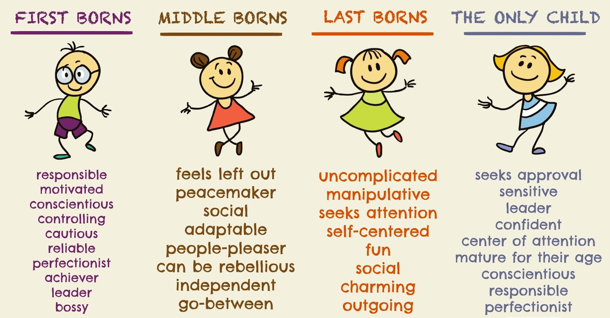

Introduction:
This whole post started because I had a random thought in the shower. There are so many stereotypes about oldest, middle, youngest, and only children, and people repeat them like they are universal truths. The more I thought about it, the more I realized something funny: almost all of my closest friends are second children. I never planned that and it just kind of naturally happened. So I started wondering if that was a coincidence or if there is an actual reason I gravitate toward people with that kind of sibling dynamic.
That made me curious about whether birth order actually shapes who we become or if it is just something we like to joke about because it feels relatable. I wanted a clearer explanation, not from TikTok or from random personality memes, but from something that could break down the theories and the research behind it, so I turned to an LLM to help me understand it.
Prompt:
Explain whether birth order actually affects personality. Include classic theories and what modern research says. Make it easy to understand. Compare oldest, middle, youngest, and only children, and explain which patterns are supported by evidence and which ones are mostly cultural or anecdotal. Also explain why someone might naturally gravitate toward people of a certain birth order.
Response:
Sure! Let’s talk about birth order and personality in a simple and clear way.
The Big Question:
Does your order in the family (oldest, middle, youngest, or only child) shape your personality?
Classic Theories
Years ago, psychologists like Alfred Adler (a student of Freud) were among the first to suggest that birth order matters. According to these early theories:
- Oldest children are responsible leaders because they had to take care of younger siblings.
- Middle children are peacemakers and feel overlooked, so they become social and adaptable.
- Youngest children are outgoing, attention-seeking, and sometimes rebellious.
- Only children are mature for their age, perfectionists, and sometimes loners because they got all the attention — and pressure — from adults.
These ideas became very popular and are still around in books, articles, and even jokes today.
What Modern Research Says
However, modern science is more cautious.
Large studies involving thousands or even millions of people in recent years show that: - Birth order has little to no consistent effect on broad personality traits such as extraversion, agreeableness, conscientiousness, neuroticism, or openness. - Any differences that do show up tend to be very small and may disappear entirely when controlling for things like family size, income, or age gaps.
That said, some research has still found specific patterns — especially related to intelligence and behavior, not core personality.
What Might Be True — and Why
Here’s a comparison of typical birth order traits — and whether there’s solid evidence to back them up:
| Birth Order | Common Beliefs | Backed by Research? | Notes |
|---|---|---|---|
| Oldest | Responsible, organized, leadership skills, high achievers | 🟡 Partially | Firstborns may score slightly higher on IQ and school achievement. Could be a result of more attention early on. |
| Middle | Adaptable, peacekeepers, feel “in the middle” | 🔴 Weak evidence | These traits are hard to prove scientifically and may depend more on family context. |
| Youngest | Funny, outgoing, attention-loving, risk-takers | 🔴 Weak evidence | This might describe some youngest kids, but it’s not reliable across the board. |
| Only Child | Mature, perfectionist, self-sufficient, lonely? | 🟡 Somewhat | They often behave like firstborns, and the “lonely only” myth is not well supported. |
So, while some patterns seem tomake sense, they’re not strong enough to predict personality in all cases.
Why Do These Ideas Persist?
People love patterns — and families are full of stories.
- Parents may treat kids differently depending on birth order, which affects their experiences — though not always their deep personality.
- Stereotypes can stick and become “self-fulfilling.” For example, if everyone tells the youngest they’re the clown, they might lean into it.
- Culture and media reinforce these beliefs — think of the bossy big sister or the spoiled youngest in TV shows.
Why You Might Click with People of a Certain Birth Order
Interestingly, we may feel more comfortable with people whose birth order matches or complements ours. Why?
- Shared experience: Firstborns might relate to other firstborns because they both had to “grow up quickly.”
- Balance: A middle child may enjoy a relationship with an only child who craves connection, balancing out each other’s needs.
- Familiarity: Some people are simply drawn to people who remind them of their own siblings — for better or worse!
In Summary
- Birth order can influence experiences, but it doesn’t strongly shape your personality overall.
- Some small effects show up (like intelligence in firstborns), but personality traits are mostly shaped by many things: genes, parenting, environment, culture, and even chance.
- Still, the concept of birth order resonates with people because families are emotional, personal experiences — and labels can help us understand ourselves.
So, birth order might affect how you see yourself or how others treat you, but it probably doesn’t define who you truly are.
Let me know if you want a fun quiz to guess someone’s birth order based on how they act!
Reflection:
I will admit I felt a little disappointed reading the AI’s answer. I thought it would match the patterns I have seen in real life because I genuinely believe birth order shows up in people more than we acknowledge. Almost all of my closest friends are second children, and there are qualities they share that feel so specific that it is hard to chalk it up to coincidence.
But I also know my “data set” is tiny and totally biased. It is just the people I happen to be close to, not a representative sample of the world. I think part of me wanted the research to confirm what I already believed, which is that your place in the family shapes who you become in a meaningful way. The AI reminded me that personality is messy and influenced by so many factors that birth order alone cannot explain it.
Even so, I still think these patterns matter on a personal level. Maybe it is not strong enough to show up in giant studies, but we all grow up inside specific family dynamics, and those dynamics leave traces. So even if the science says the effect is small, it still feels real in my own life.